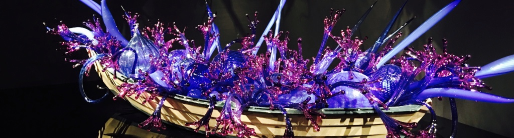

Conferences
-
M2@UW - April 14 - April 17, 2018
University of Wisconsin in Madison, WI
-
From past experiences I understand the importance of trying to organize conferences and events that are inclusive and supportive of all individuals.
When organizing events I do my best to keep this in mind, and
Math Circles
In addition to my volunteer work (see my Outreach page) I have also been involved as an organizer with
both the Madison and Michigan math circles.
In these positions I have worked to broadening the reach and impact of these circles.
For example, with the Madison Math Circle I have helped expand the circles programing by beginning to hold
off-campus meetings at local schools and partnering with other community organizations.
Departmental
- Member, Committee on Inclusivity – (Fall 2016 - Summer 2017)
- Member, Committee on Teaching Assistant Performance and Pay – (Fall 2015 - Summer 2017)
- co-Organizer, Graduate Algebraic Geometry Seminear – (Fall 2015 - Present)
Campus
- co-Founder & Vice President, oSTEM@UW – (Fall 2017 - Present)
- Founder & President, SUMS at University of Michigan – (Fall 2012 - Summer 2014)